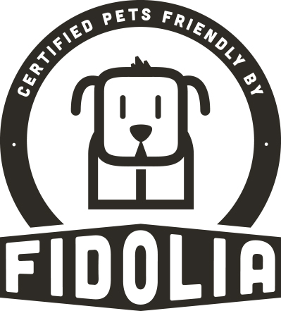
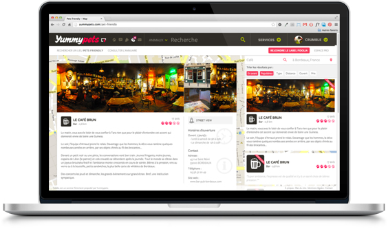
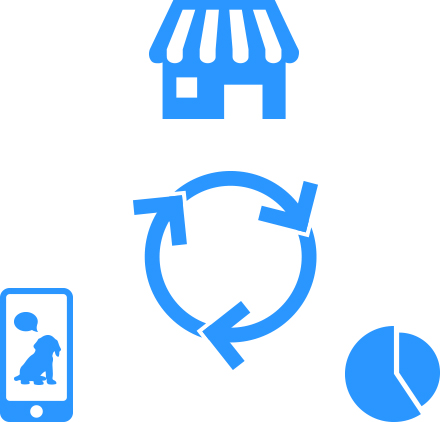

Le 1er label référençant les lieux acceptant les animaux de compagnies :
Fidolia est le label Pets Friendly qui garantit l'acceptation de votre animal dans les lieux publics, les hôtels, restaurants, campings, bars...
Du crowdsourcing pour référencer les lieux :
Les utilisateurs peuvent ajouter des lieux depuis la plateforme ou proposer à un gérant d’apposer le label Pets Friendly dans son établissement.
Une plateforme dédiée à l'utilisation du sticker NFC :
Grâce au service Pets Friendly, les membres ont accès à toutes les informations utiles pour voyager avec leur animal de compagnie.
Ils peuvent entre autres :
- Découvrir tous les lieux qui acceptent leur animal
- Réserver une nuit parmi les hôtels référencés au label Fidolia
- Découvrir de nouveaux lieux pour promener leur compagnon


Une puce qui profite aux propriétaires d'animaux et professionnels :
- Permettre à la communauté de s’exprimer : les utilisateurs peuvent consulter et déposer des avis sur le lieu
- Faire profiter les membres d'offres promotionnelles lors du tag de l'autocollant
- Donner accès aux professionnels à des statistiques pertinentes